Complete solutions for mineral processing — from primary crushing to fine grinding, with world-class roller assemblies.
The FoolProof® Oil-Lubricated Roller Assembly is our core product, designed as a direct upgrade for Raymond mill grinding rollers. Unlike conventional grease-lubricated assemblies, our sealed oil-bath system provides continuous lubrication, dramatically reducing friction, wear, and maintenance frequency.
Ideal for high-volume mineral grinding operations — limestone, gypsum, calcite, dolomite, barite, and more. Available for all major Raymond mill models.
Request Quotation & Spec Sheet| Lubrication Type | Sealed Oil-Bath (FoolProof® Multi-Stage Labyrinth Seal) |
| Weight Range | 20 kg – 600 kg per assembly (model-dependent) |
| Compatible Mill Models | 3R, 4R, 5R, 6R series and custom specifications |
| Roller Material | High-chrome alloy / Manganese steel (application-specific) |
| Seal Type | Triple-stage labyrinth with oil retention ring |
| Operating Temperature | -20°C to +200°C (with appropriate oil grade) |
| Maintenance Interval | Oil change every 2,000–3,000 operating hours |
| Expected Service Life | 2× – 3× longer than grease-lubricated equivalents |
| MOQ | 1 set (sample orders welcome) |
| Lead Time | Standard: 7–15 days | Express: 3–5 days (depending on stock) |
Our proprietary multi-stage labyrinth seal eliminates the #1 failure mode of oil-lubricated rollers — lubricant leakage. Each seal is tested under pressure before shipment.
Oil circulation naturally carries heat away from the bearing surfaces, maintaining optimal operating temperature even under continuous heavy load.
Longer lubrication intervals mean fewer shutdowns. Most customers report 50%+ reduction in roller-related maintenance downtime after switching to FoolProof®.
Factory-direct sales eliminate distributor margins. You get premium sealed-bearing technology at prices competitive with standard grease-type assemblies.
Full Raymond mill systems built to your exact specifications. We supply complete grinding plants including the main mill, classifier, cyclone collector, blower, and all supporting equipment. Available in 3R through 6R configurations.
Whether you're setting up a new powder processing line or upgrading existing capacity, we provide end-to-end solutions with installation guidance and after-sales support.
Request Mill Quotation| 3R Series | Small-capacity mills, ideal for pilot plants and small-scale operations. 0.5–3 tons/hour. |
| 4R Series | Mid-range capacity. The most popular model for medium-scale mineral grinding. 2–8 tons/hour. |
| 5R Series | High-capacity mills for industrial-scale production. 5–20 tons/hour. |
| 6R Series | Maximum throughput for large mining and processing operations. 15–40 tons/hour. |
| Custom | Modified configurations for specific minerals or throughput requirements. |
A comprehensive range of grinding mills for fine and ultrafine powder processing — from Raymond mills to European-style and ultrafine mills.
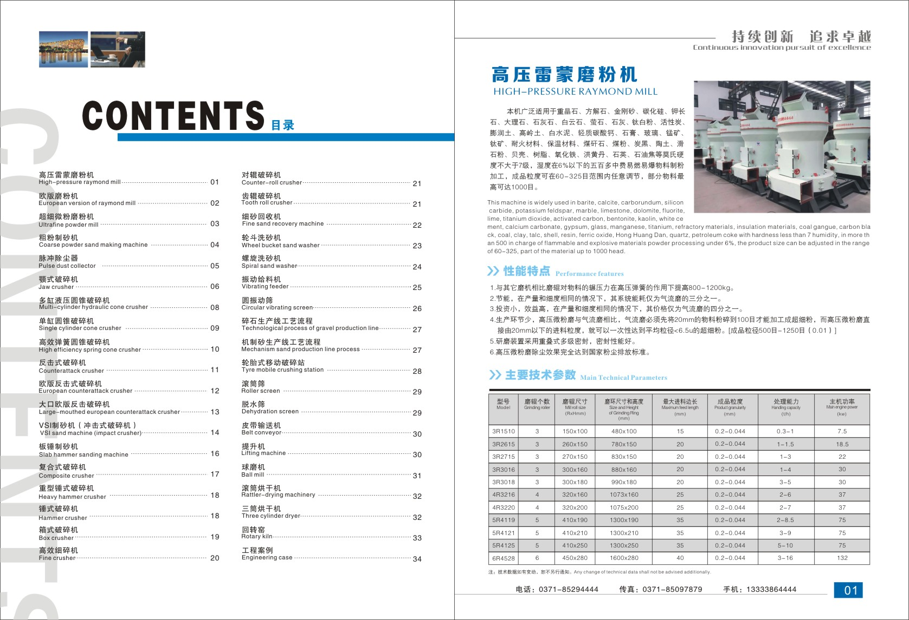
High-pressure spring design increases grinding pressure by 800–1200 kg compared to ordinary Raymond mills. Suitable for processing non-flammable materials with Mohs hardness ≤9.3. Output: 0.5–40 t/h.
Request Quote →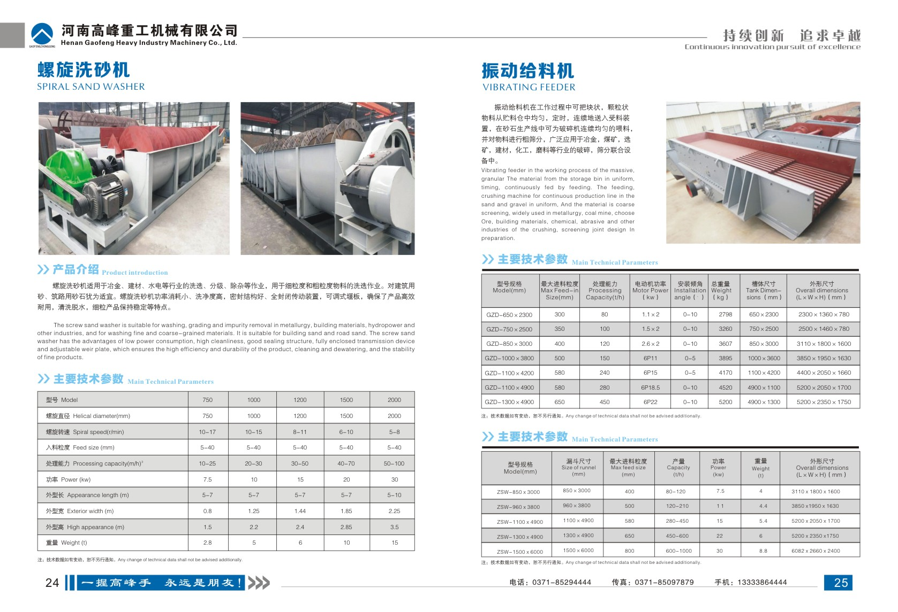
Advanced bevel gear transmission, thin oil lubrication, curved air duct design. Higher capacity and lower energy consumption. Ideal for limestone, calcite, barite, dolomite, bentonite, etc.
Request Quote →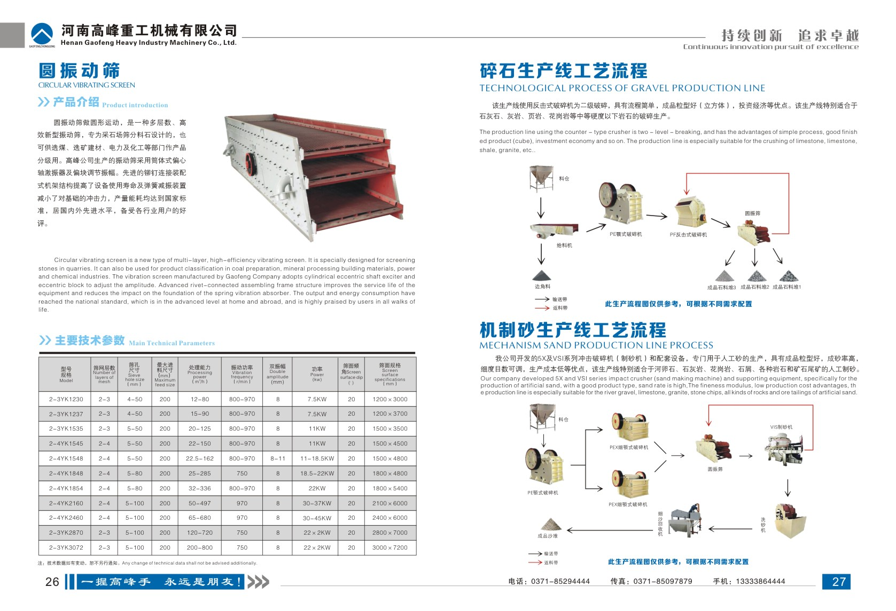
Produces powders from 300 to 3000 mesh. Three-ring design for ultrafine classification. Perfect for high-value mineral processing — talc, kaolin, graphite, barite, calcite.
Request Quote →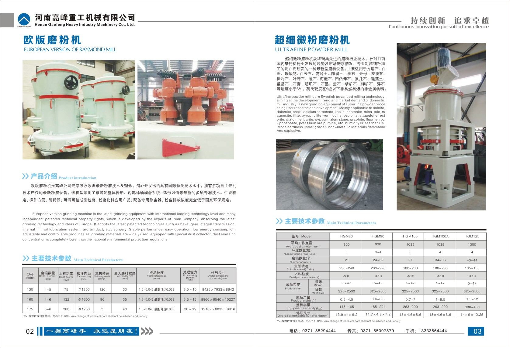
Designed for coarse powder processing (0–3 mm) with high efficiency and low energy consumption. Combines crushing and grinding functions. Feed size up to 30 mm.
Request Quote →A full line of crushers for primary, secondary, and tertiary crushing stages — jaw crushers, cone crushers, impact crushers, hammer crushers, and VSI sand makers.
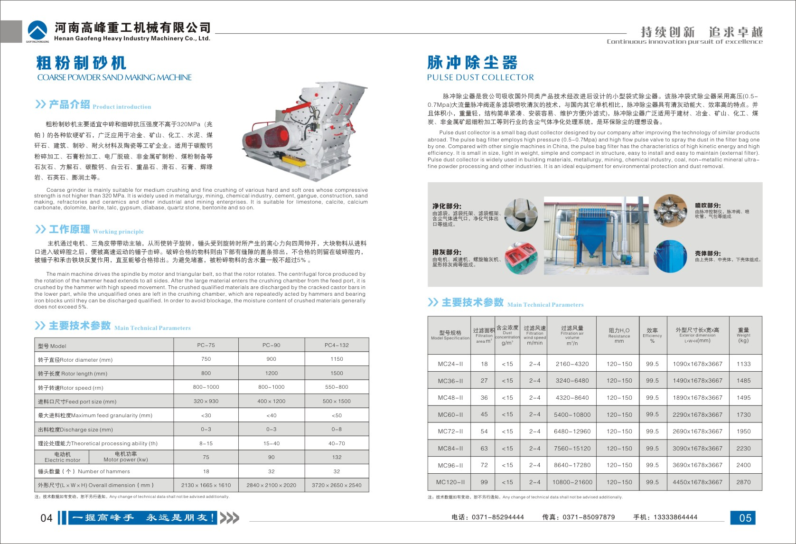
Reliable primary crusher with high crushing ratio and uniform output. Feed size up to 1020 mm. Available in various models from PE-250×400 to PE-1200×1500.
Request Quote →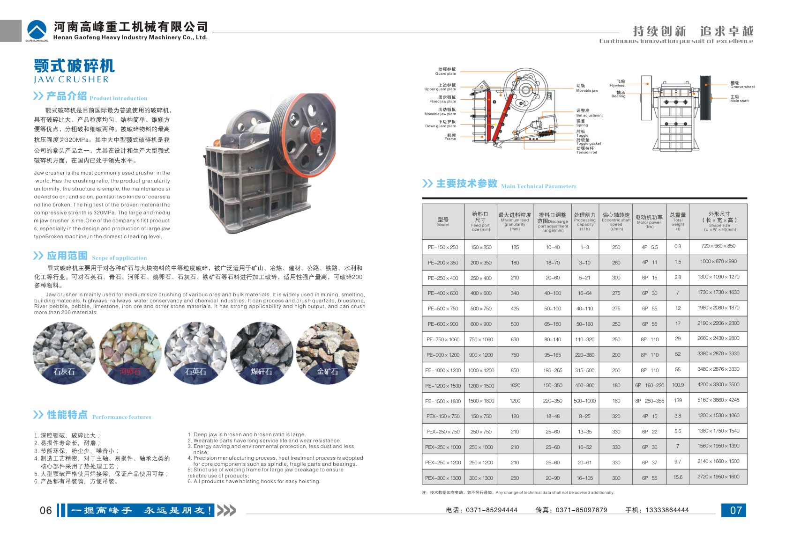
Advanced hydraulic system for overload protection and easy cavity clearing. High automation and low operating cost. Ideal for hard rock crushing in mining and aggregate industries.
Request Quote →Compact design with hydraulic adjustment and overload protection. Simple structure, low maintenance, ideal for medium-hard to hard rock crushing.
Request Quote →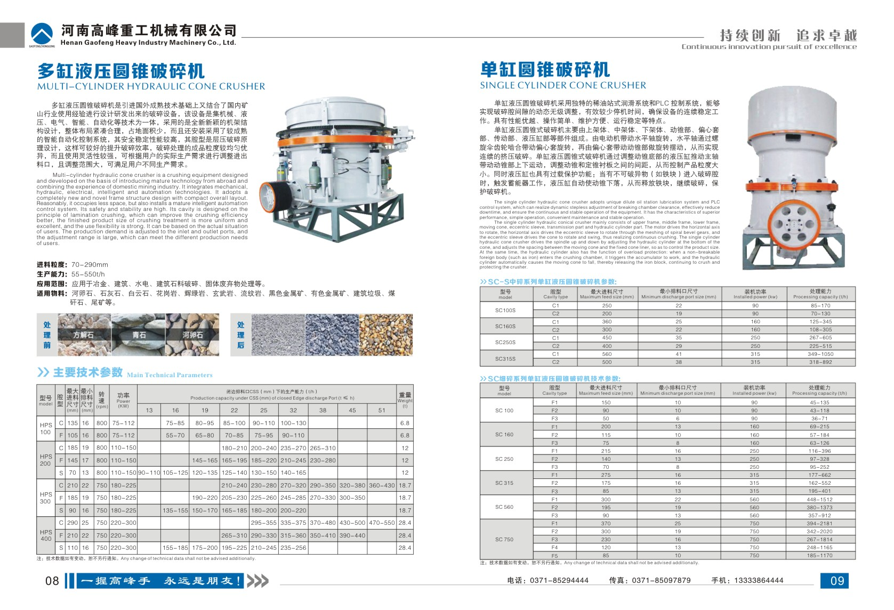
Traditional spring protection system with proven reliability. Suitable for crushing various ores and rocks with medium and above hardness. Stable performance, easy maintenance.
Request Quote →Uses impact energy to crush materials. Ideal for limestone, concrete, and asphalt recycling. Cubic-shaped output, high reduction ratio, adjustable discharge size.
Request Quote →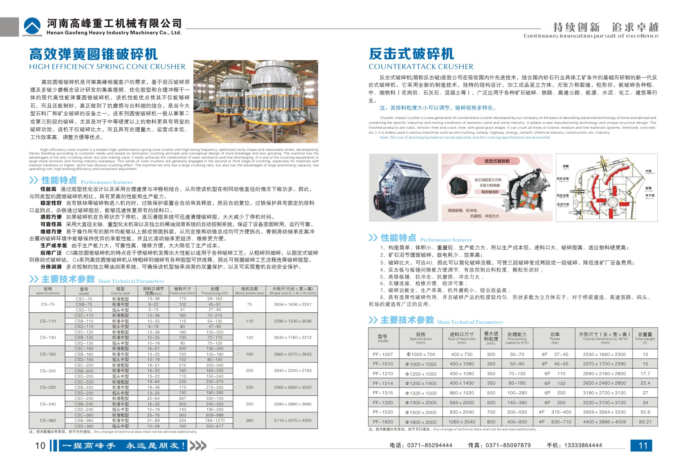
Heavy-duty rotor, larger feed opening, higher crushing chamber. Designed for extra-large capacity requirements. European engineering for maximum durability and throughput.
Request Quote →High-performance vertical shaft impact crusher for sand making and aggregate shaping. "Stone-on-stone" crushing principle. Output: manufactured sand with excellent particle shape. Feed: <50 mm.
Request Quote →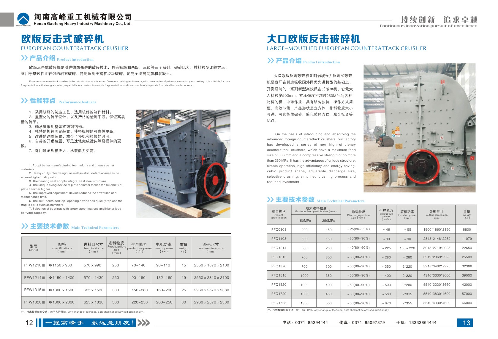
Uses slab hammer technology for fine crushing and sand production. High crushing efficiency, low wear cost. Suitable for limestone, river pebble, granite, basalt.
Request Quote →Combines impact and hammer crushing principles. No grate bar design — ideal for wet materials (clay, coal gangue, shale). Large feed size, high output, low blockage rate.
Request Quote →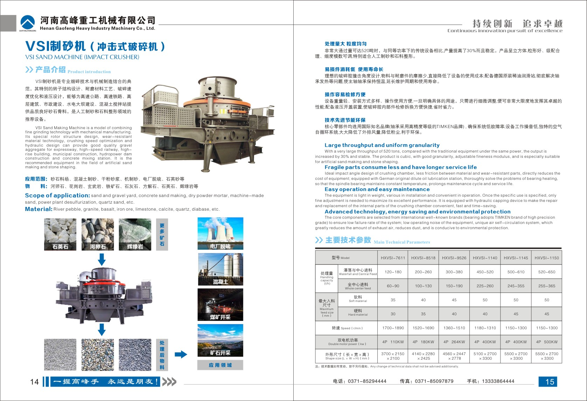
One-step crushing from feed to finished product. Replaces jaw crusher + impact crusher combination. Feed up to 1000 mm. High throughput with low investment cost.
Request Quote →Traditional hammer crusher for medium-hard materials. Simple structure, high reduction ratio, low cost. Suitable for limestone, coal, gypsum, and other brittle materials.
Request Quote →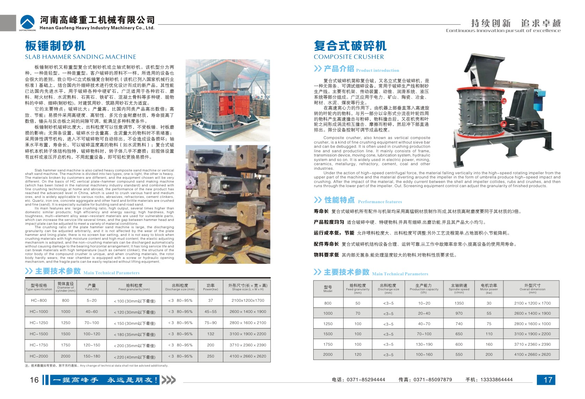
Extra-large feed opening handles materials up to 1200 mm. Heavy-duty frame for demanding applications. One-step crushing, no secondary processing needed.
Request Quote →Third/fourth stage fine crushing with low energy consumption. "Stone-beats-iron" design reduces wear cost. Output particle size adjustable from 2–10 mm.
Request Quote →Supporting equipment for washing, screening, feeding, and dust collection — completing your mineral processing line from start to finish.
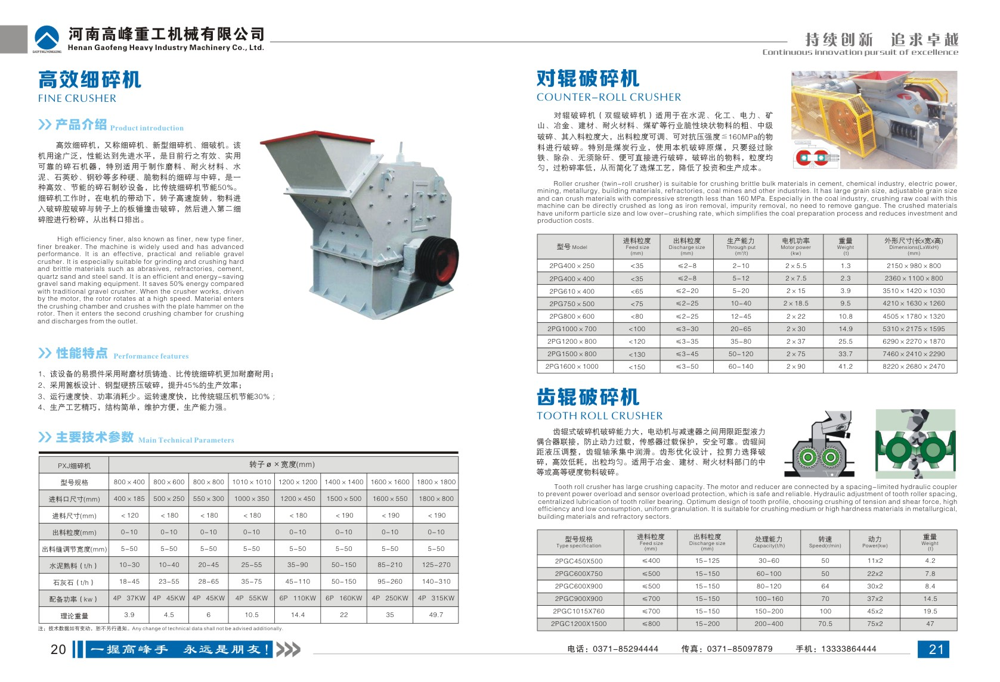
Stable and uniform feeding for crushers and grinding mills. Adjustable amplitude and frequency. Suitable for both coarse and fine materials.
Request Quote →Multi-layer screening for aggregate classification. Circular motion, high efficiency, large capacity. Available in 1–4 deck configurations.
Request Quote →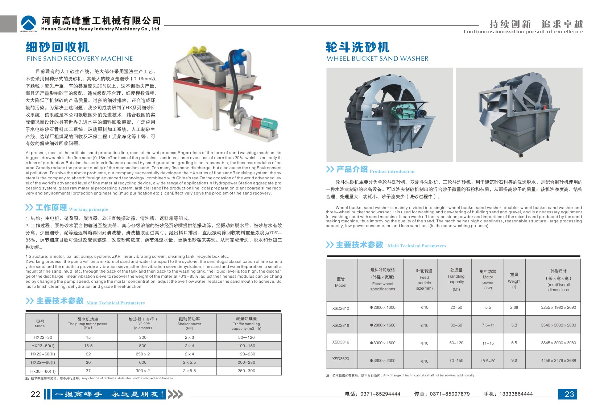
Efficient sand washing with minimal fine sand loss. Clean sand with particle size <10 mm. Low water consumption. Simple structure, easy maintenance.
Request Quote →For heavy-duty sand washing with spiral agitation. Handles larger particles than wheel type. Ideal for washing sticky clay and high-debris sand materials.
Request Quote →Recovers fine sand particles (0.075–5 mm) from waste water in sand washing operations. Reduces material loss and environmental pollution. Recovery rate up to 85%.
Request Quote →High-efficiency pulse-jet dust collection for grinding and crushing operations. Automatic cleaning cycle. Emission concentration <30 mg/Nm³. Meets environmental standards.
Request Quote →Comprehensive range of wear parts and replacement components for Raymond mills, crushers, and grinding equipment. We maintain a large inventory of common parts for fast dispatch — most items ship within 72 hours.
All parts manufactured to OEM specifications with rigorous quality control. Custom fabrication available for non-standard or obsolete mill models.
Request Parts Catalog